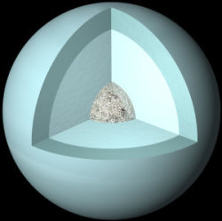

Uranus est la première planète découverte au début de l'époque moderne. C'est la septième planète en partant du Soleil. Il s'agit d'une planète géante de glaces.
Elle a été découverte par William Herschel le 13 mars 1781. Elle avait été observée plus tôt, mais elle avait été confondue avec une étoile. En 1690, John Flamsteed l'a cataloguée comme 34 Tauri.
Elle est pratiquement invisible à l'œil nu.
Il lui faut 84 années et 7 jours pour accomplir une révolution autour du Soleil.
Uranus est composée principalement de rocs et de divers types de glace. Contrairement à Jupiter et Saturne, elle n'est pas composée uniquement d'hydrogène. Elle est composée à 83% d'Hydrogène et à 13% d'Hélium. De plus, on note la présence, dans la couche la plus externe de la planète, de méthane gazeux (environ 2%). La couleur bleue d'Uranus est due à cette couche de méthane qui absorbe la lumière rouge.
Uranus n'a reçu la visite que d'une seule sonde : la sonde Voyager 2 le 24 janvier 1986.
La particularité de cette planète est que son axe de rotation est incliné de 80% par rapport à son orbite, ainsi Uranus semble rouler sur son orbite alors que les autres planètes se comportent comme des toupies. Uranus possède 27 satellites, Titania, Umbriel, Ariel, Miranda, Obéron pour les plus connus.
Uranus est entouré de 13 anneaux sombres. Les sont Zêta, 6, 5, 4, Alpha, Bêta, Êta, Gamma, Delta, Lambda, Epsilon, Nu et Mu.
Contrairement aux autres astres du système solaire, les satellites d'Uranus prennent leurs noms dans les écrits de Shakespeare et de Pope.
Tous ces satellites et ces anneaux se situent sur le plan équatorial de la planète, ce qui signifie que l'orientation étrange de l'axe de rotation a eu lieu lors de la formation du système solaire et non plus tard. Sinon ses satellites et ses anneaux "rouleraient" sur l'écliptique.
STRUCTURE
Jupiter pourrait être composée d'un noyau rocheux de la taille de la terre. Ce noyau serait entouré d'hydrogène en phase métallique qui occupe 78% du rayon de la planète. Cet état serait liquide, un peu à la manière du mercure. Il est dénommé ainsi car la pression est telle que les atomes d'hydrogène s'ionisent, formant un matériau conducteur. Cet hydrogène métallique est lui-même entouré d'hydrogène liquide, à son tour entouré d'hydrogène gazeux
Uranus possède un noyau solide de silicates et de fer d'environ 7 500 km de diamètre.
Ce noyau est entouré d'un manteau composé de glace d'eau mélangée à de l'hélium, du méthane et de l'ammoniac sur une épaisseur de 10 000 km.
Enfin une couche superficielle d'hydrogène et d'hélium liquide, épaisse d'environ 7 600 km qui se fond graduellement dans l'atmosphère, recouvre le manteau.